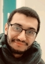

Abdelmalek ROUAK

Mon expérience
- De 2019 à Aujourd'hui : Développeur de logiciel embarqué chez E4V à Ayguemorte-les-graves
- De 2015 à 2018 : Apprenti ingénieur électronque cez Lectra à Cestas
- En 2017 : Stagiaire chez Institute of Electronics and Computer Science à Riga en Lettonie
Mes compétences
- Programmation langage C sur microcontrôleurs
- Protocoles : CAN, Modbus, SPI, I2C
- Utilisation de Git
Ma formation
- 2015-2018 : Diplôme d'ingénieur en Systèmes Electroniques Embarqués à l'Enseirb-MatMeca à Talence
- 2013-2015 : BTS Systèmes électroniques, Lycée Pape Clément à Pessac